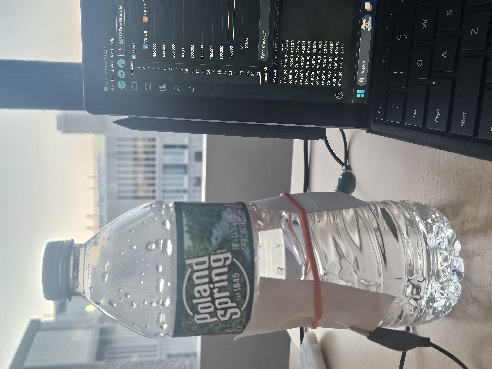
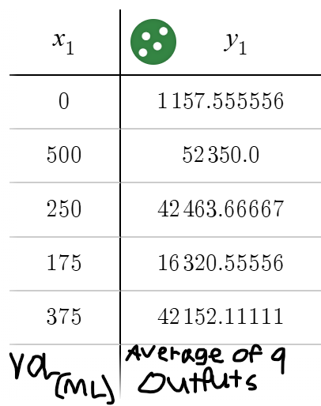
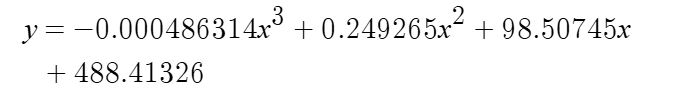

<div class="textcontainer">
<p class="margin"> </p>
<h3>Week 6: Electronic Inputs</h3>
<h3>Assignment 1: Capactive Sensor<h3>
<h4>For this assignment, I made a circuit where I put a photoresistor in a circuit that went as follows. 5V, resistor, data pin wire, phototransistor, ground. </h4>
<h4>With this setup, I found the minimum value by covering it up in complete darkness, and found the highest value I could make by shining my phone flashlight at max brightness on it. </h4>
<h3>Assignment 2: [Use + Calibrate Another Sensor]</h3>
<h4>For this assignment I attached the copper tape to a plastic bottle of water to determine the volume of the bottle.</h4>
<div style="display: flex; gap: 20px; flex-wrap: wrap;">
<p></p>
<p></p>
</div>
<h4>To calibrate it, I measured the sensor’s output at five easily identifiable water volumes. Using those data points, I applied cubic regression to generate an equation that accurately models the relationship between the sensor output and the water volume.</h4>
<div style="display: flex; gap: 20px; flex-wrap: wrap;">
<p></p>
</div>
<h4>This equation works for most values between 500 and 0, which are the bottle being full and the bottle being empty. In addition, when adjusting the water at the same height of the copper tape, the output value tends to vary less than it does at high or low values. This could mean that the correct equation is actually a logistic function. That’s just a theory though, I’d need more accurate measuring tools and more data to be sure. </h4>
</div>